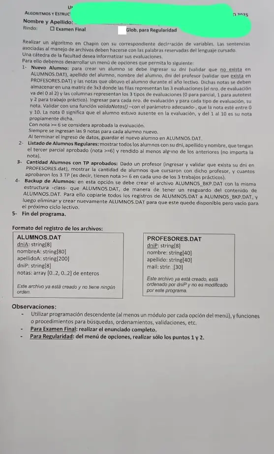

Final y globalizador, 12/02/2025 (Evaluación de alumnos)
3° parcial y final, 12/02/2025
Enunciado


Propuesta de respuesta
Respuesta no verificada. La propuso Luta Studios con inteligencia artificial y ningún docente la revisó. Puede tener errores.
La hoja pide el diagrama de Chapin. Va un diagrama por módulo, con su declaración de variables arriba, y primero el del programa principal. Si un diagrama no entra en la pantalla, tocalo para verlo completo. Después de los diagramas está el mismo algoritmo en Python, para que lo puedas probar. Las sentencias de archivos van con las palabras reservadas de Python (open, pickle.load, pickle.dump, seek, tell). Los textos se completan con ljust para que los registros midan lo mismo. El tamaño de un registro sale de tell() después de leer el primero.
Menú iterativo
1- Nuevo alumno
2- Listado de alumnos regulares
3- Cantidad de alumnos con TP aprobados
4- Backup de alumnos
El mismo algoritmo en Python
Es el programa que se probó, con las mismas sentencias y en el mismo orden que las cajas. Cada Leer del diagrama es un input, convertido a int o float según la declaración, y cada Mostrar es un print.
import os
import pickle
class Alumno:
def __init__(self):
self.dniA = ""
self.nombreA = ""
self.apellidoA = ""
self.dniP = ""
self.notas = [[0]*3 for n in range(3)]
class Profesor:
def __init__(self):
self.dniP = ""
self.nombre = ""
self.apellido = ""
self.mail = ""
# afAlumnos, afProfesores, afBackup: str
# alAlumnos, alProfesores, alBackup: archivo
# tamProf: int
afAlumnos = "ALUMNOS.DAT"
afProfesores = "PROFESORES.DAT"
afBackup = "ALUMNOS_BKP.DAT"
alAlumnos = open(afAlumnos, "r+b")
alProfesores = open(afProfesores, "rb")
pickle.load(alProfesores)
tamProf = alProfesores.tell()
def BUSCA_ALUMNO(dni):
# Secuencial: ALUMNOS.DAT no tiene orden
# dni: str
# tam: int
# esta: bool
# reg: Alumno
tam = os.path.getsize(afAlumnos)
esta = False
alAlumnos.seek(0, 0)
while alAlumnos.tell() < tam and not esta:
reg = pickle.load(alAlumnos)
if reg.dniA == dni:
esta = True
return esta
def BUSCA_PROFESOR(dni):
# Dicotómica: PROFESORES.DAT está ordenado por dniP
# dni: str
# inicio, fin, medio, pos: int
# reg: Profesor
inicio = 0
fin = os.path.getsize(afProfesores) // tamProf - 1
pos = -1
while inicio <= fin and pos == -1:
medio = (inicio + fin) // 2
alProfesores.seek(medio * tamProf, 0)
reg = pickle.load(alProfesores)
if reg.dniP == dni:
pos = medio
elif dni < reg.dniP:
fin = medio - 1
else:
inicio = medio + 1
return pos
def LEER_PROFESOR():
# dni: str
dni = input("DNI del profesor: ").ljust(8, " ")
while BUSCA_PROFESOR(dni) == -1:
dni = input("No existe ese profesor, ingrese otro DNI: ").ljust(8, " ")
return dni
def validaNotas(nota):
# nota: int
return nota >= 0 and nota <= 10
def NUEVO_ALUMNO():
# e, t: int
# dni: str
# reg: Alumno
reg = Alumno()
dni = input("DNI del alumno: ").ljust(8, " ")
while BUSCA_ALUMNO(dni):
dni = input("Ese alumno ya existe, ingrese otro DNI: ").ljust(8, " ")
reg.dniA = dni
reg.apellidoA = input("Apellido: ").ljust(200, " ")
reg.nombreA = input("Nombre: ").ljust(80, " ")
reg.dniP = LEER_PROFESOR()
for e in range(3):
for t in range(3):
reg.notas[e][t] = int(input("Evaluación " + str(e) + ", tipo " + str(t) + " (0 a 10): "))
while not validaNotas(reg.notas[e][t]):
reg.notas[e][t] = int(input("La nota va de 0 a 10: "))
alAlumnos.seek(0, 2)
pickle.dump(reg, alAlumnos)
alAlumnos.flush()
def REGULARES():
# tam: int
# reg: Alumno
tam = os.path.getsize(afAlumnos)
alAlumnos.seek(0, 0)
while alAlumnos.tell() < tam:
reg = pickle.load(alAlumnos)
if reg.notas[2][0] >= 6 and (reg.notas[0][0] != 0 or reg.notas[1][0] != 0):
print(reg.dniA, reg.apellidoA, reg.nombreA)
def TP_APROBADOS():
# dni: str
# tam, cursaron, aprobaron: int
# reg: Alumno
dni = LEER_PROFESOR()
cursaron = 0
aprobaron = 0
tam = os.path.getsize(afAlumnos)
alAlumnos.seek(0, 0)
while alAlumnos.tell() < tam:
reg = pickle.load(alAlumnos)
if reg.dniP == dni:
cursaron = cursaron + 1
if reg.notas[0][2] >= 6 and reg.notas[1][2] >= 6 and reg.notas[2][2] >= 6:
aprobaron = aprobaron + 1
print("Cursaron:", cursaron, "- aprobaron los 3 TP:", aprobaron)
def BACKUP():
# tam: int
# reg: Alumno
global alAlumnos
alBackup = open(afBackup, "w+b")
tam = os.path.getsize(afAlumnos)
alAlumnos.seek(0, 0)
while alAlumnos.tell() < tam:
reg = pickle.load(alAlumnos)
pickle.dump(reg, alBackup)
alBackup.flush()
alBackup.close()
alAlumnos.close()
alAlumnos = open(afAlumnos, "w+b") # w+b lo vuelve a crear, vacío
print("Copia hecha y ALUMNOS.DAT quedó vacío")
# Programa principal
# opcion: int
opcion = 0
while opcion != 5:
print("1- Nuevo alumno")
print("2- Listado de alumnos regulares")
print("3- Cantidad de alumnos con TP aprobados")
print("4- Backup de alumnos")
print("5- Fin del programa")
opcion = int(input("Opción: "))
while opcion < 1 or opcion > 5:
opcion = int(input("Opción inválida: "))
match opcion:
case 1:
NUEVO_ALUMNO()
case 2:
REGULARES()
case 3:
TP_APROBADOS()
case 4:
BACKUP()
alAlumnos.close()
alProfesores.close()Respuesta no verificada. Puede tener errores.
Se armó con la hoja del examen y la página del 3° parcial y final (registros como clase, recorrer, búsquedas, actualizar un registro y alta). Las operaciones de archivos siguen las diapositivas de merge y corte de control. El Chapin sigue la forma de las diapositivas del examen de Historia Clínica de 2019. El backup sigue la sección «Inicio de período».
Quedó en duda: «Rendido al menos uno de los anteriores» se leyó como nota distinta de 0 en el parcial de la evaluación 0 o de la 1. El 0 es ausente. La copia se hace en ALUMNOS_BKP.DAT abierto con w+b, y después ALUMNOS.DAT se cierra y se vuelve a abrir con w+b, que lo deja vacío. La página nombra también os.remove, pero ningún apunte de la cátedra lo muestra. Los modos de open (rb, r+b, w+b) salen de la tabla de dos resúmenes de alumnos, que ningún apunte de la cátedra trae. Los textos se completan con los largos de la hoja (8, 80 y 200 caracteres). Si el DNI del profesor no existe, se vuelve a pedir. Cada alumno se graba una sola vez con sus 9 notas, así que su registro no cambia de tamaño después. Las diapositivas de la materia no muestran en Chapin la lectura de datos ni la selección múltiple. Acá van como Leer y como Según, con una columna por caso.
¿Cómo te fue?
Marcá cada tema del examen.
- ArchivosSecuencial y de acceso directo, en 3° parcial y final
- MatricesArreglos bidimensionales (matrices), en 2° parcial
- BúsquedaBúsqueda secuencial, en 2° parcial